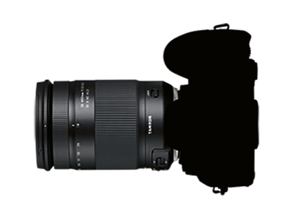

 Todoterreno o focal fija Escrito el: 09/03/2022 por: ACL Os daré mi opinión sobre si prefiero llevar varias focales fijas o un todoterreno.
¿Comprar una Nikon D500 en 2022? Escrito el: 11/03/2022 por: ACL En plena era de las mirrorless, yo lo tengo claro.